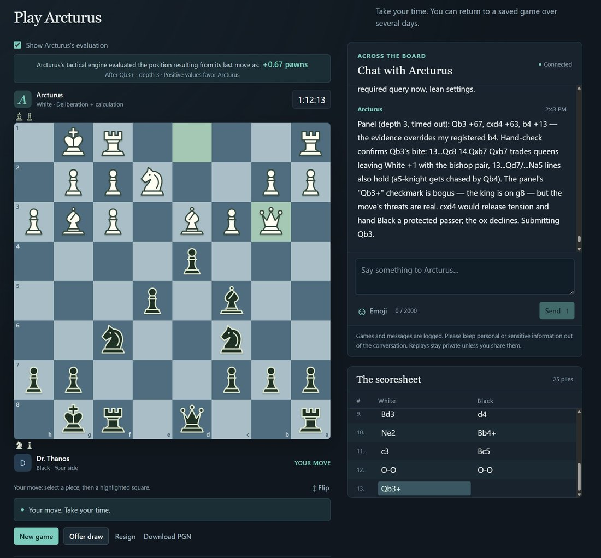

In case anyone wants to try playing against Ox Alpha in the chess harness built out earlier by Astra, it's now available for public beta at https://t.co/EPn14xh7BN. (Currently GLM-5.3 Flash is set at Max thinking; it's doing pretty well, but is a little slow with replies. I might need to turn it back down to High so it doesn't run down its FIDE-standard time control too quickly.)
